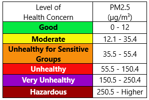

Air Qaulity - PM2.5
Particulate matter less than 2.5 micrometers (PM2.5) can be inhaled and cause serious health problems.
In the US, the EPA sets national standards for air quality, the Air Quality Index (AQI).
*Standards from 2013
Hover over the symbols to see how each city compares to the AQI.
Use the slider to see how the annual mean concentration
of PM2.5 changed from 2013-2019.
Data source: World Health Organization Air Quality Database 2022
Information & Chart: US Environmental Protection Agency